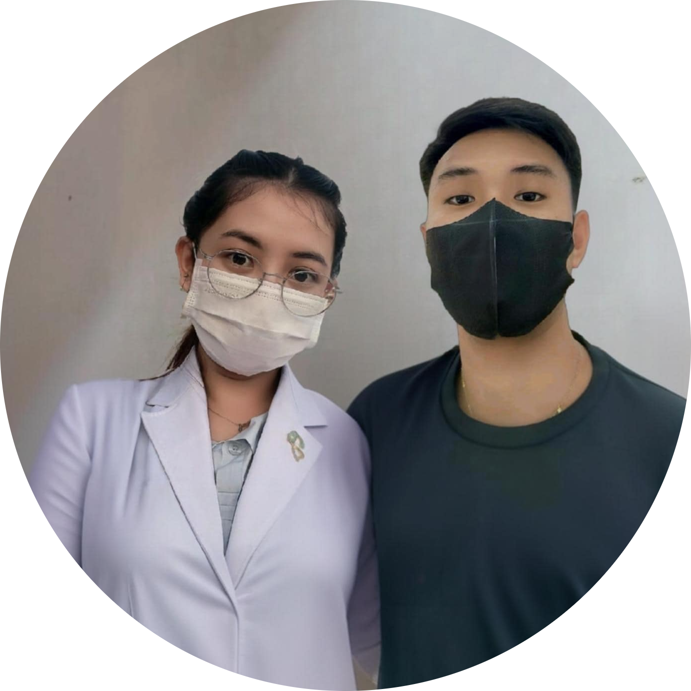
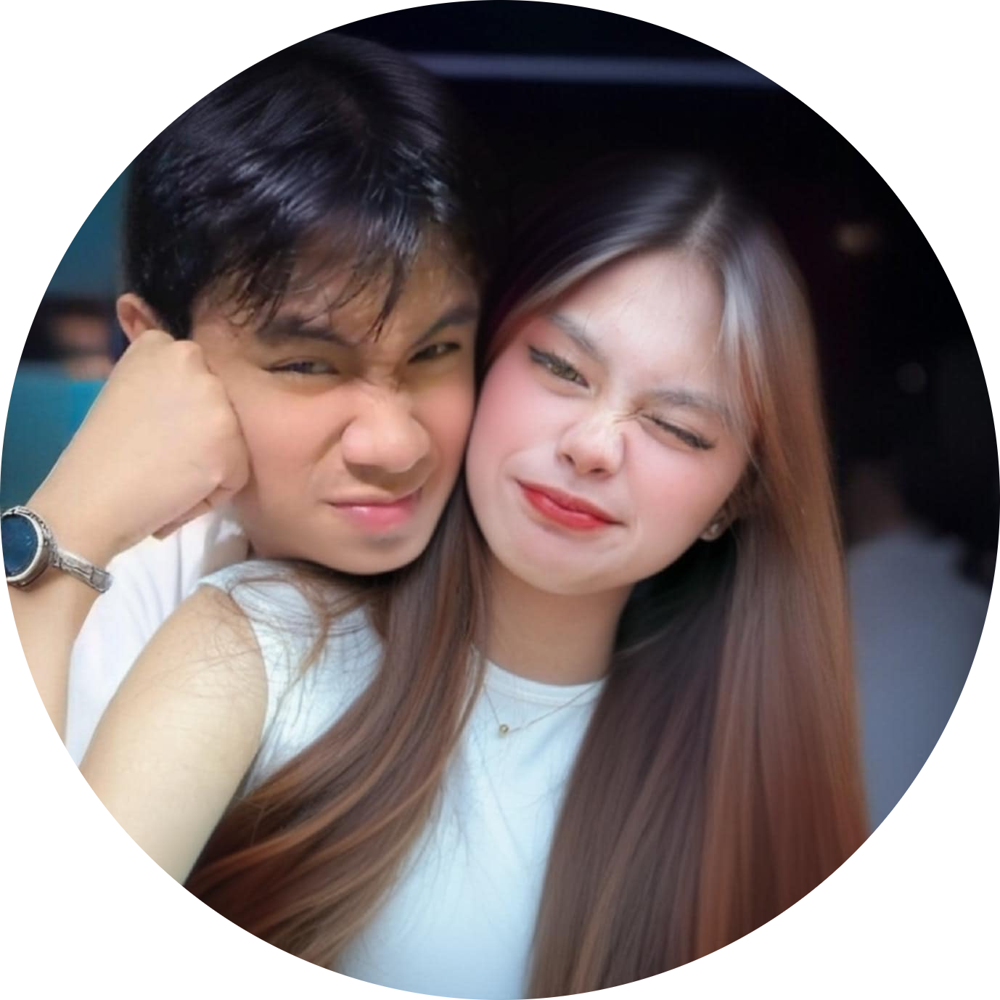
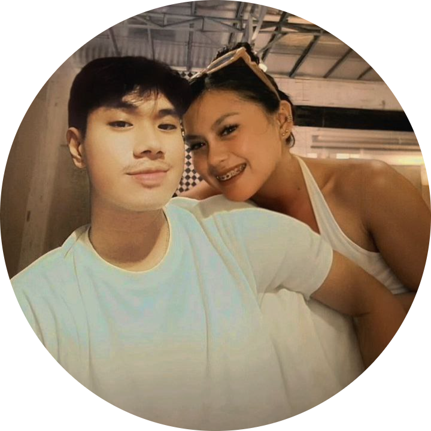
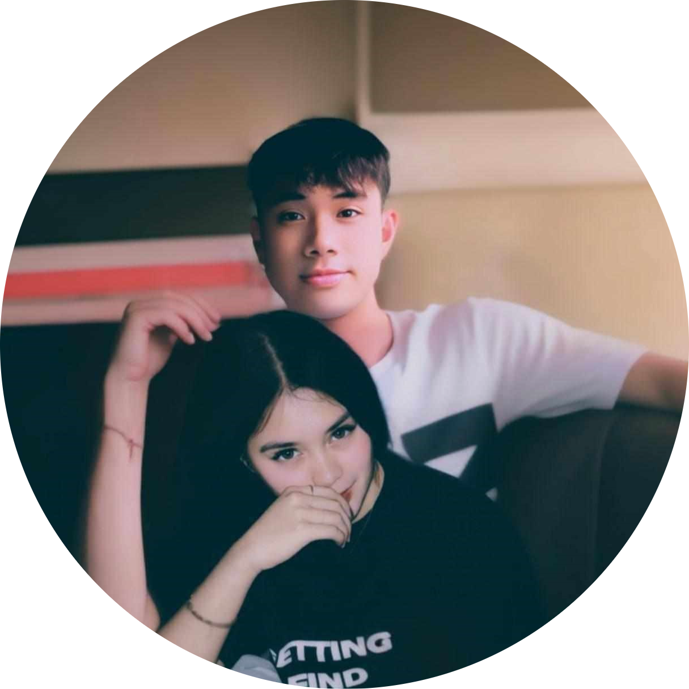

🌻🦋👽1ST ANNIVERSARY👽🦋🌻





You know what my alien, ang sarap balikan ang lahat, kung gaano tayo kasaya, sa loob ng ilan buwan at nakapunta tayo sa stage na ganito, pinapaalala sakin lahat-lahat, kung gaano din natin inaadmire ang lahat sa isa't-isa my alien🤭👽 After all, we all need someone who would remember us through a busy day. Someone who would send a text in the middle of a tiring day to keep us going🥰👽💝 A gift that would make us feel that they know exactly what we need right now. A call that would make us feel more surrounded😘👽🥰🦋 You know my alien for me time is not a barrier for what I want you know why because I am always content even though I am very busy you do a lot you are really easy to be satisfied just take a few hours a day, I will always be with you. I always tell you that I am always here when you come from work or go places trust me, whenever you come I have something to always make you feel better, to make you happy just always remember that. I always value the time that I have and the time that you have between us I am always ready to wait, I will wait until it is possible and there is no distance between us. I am willing to prove that because, I know for myself what my intentions are no matter how long it takes. Anyways, my alien, as long as we do things, even in simple things, I admire you so much in everything, you are with me in everything, you know, my alien, I really don't want to lose you while you are mine, I will do my best to prove my intentions to everyone, not just to you, but to everyone around you, I will prove it not only with words but with actions, alien, because I first showed you in action before I could say that I am interested in having you as mine and I will not hurt you. Having someone who’s always there, not just in good times, but especially in difficult ones, is a blessing I cannot explain enough.🥰👽😇 Every month that passes reminds me of how much stronger we become as partners.🥰👽💕 Despite challenges, misunderstandings, and disagreements, we learn and grow closer to each other.🥰👽💪 Our love is like a plant that slowly grows, and though storms may pass, we learn to support one another and give each other strength to continue.🥰👽🫂 My Alien, I don’t know what the future holds for us, but I know that as long as we’re together, every step will feel light and full of hope.🦋🥰👽 I may not be able to promise a perfect relationship, but I promise you that with every month, every year, and every moment of our lives, I will fight for our love.😍👽🥰 I will never let an opportunity slip away for us to be together, so I will do everything I can to preserve the warmth and light of our relationship.🥰👽😍 Thank you, My Alien, for all your understanding, patience, and unwavering love.😍👽💚 This one month is just proof of the stronger and deeper love we will continue to share. You are my strength, my companion and my home.🤗👽💝 With each month and each year, there is no equal to the value you hold in my life.🥰👽 I love you, and I will wait for each new month to come, the two of us are running until the anniversary, because every month and year we spend together is a blessing that I will never let go of.😘👽🥰🦋💝✨ So yon my alien, yung english ko is pa intense muna yon HEHEHE HAHAHA, ito na talaga, ito na nga eh sasabihin kona alien HAHAHA, sa tagal na natin umabot tayo sa ganto it's been 1 year na nag kakilala tayo alam mo yon palagi natin nagiging topic paano naging tayo nakakatawa lang kasi lahat yon nag rerecap sa ating dalawa lagi tayo nag uumpisa paano tayo nag umpisa kung paano kita tinulak tulak, inasar asar tapos nakapunta sa comment section ang tapang ko pa na sinabi ko yon "AMACANA TE" tapos lahat na curios AHAHAHAHA🤭💚😁 ang saya lang kasi may mga taong aware sa at mga kaibigan mo yon una palang kinakabahan ako nag tatanong ako sayo kung sino bayon kinakabahan ako pinangunahan mo yung kaba ko kung ano ba sila bilang kaibigan sayo HEHEHE, tapos yon nga andon na tayo sa lumalalim na yung feelings isa't isa andon na yung pag kakakilanlan natin hanggat nasa point na tayo na merong iyak, pag comfes andon na tayo kasi gusto kona yung tao ikaw, gusto mo yung tao syempre ako nayon parang ang tagal tagal na natin mag kakilala nakakaramdam ako ng ganon sa sarili ko,🤭👽🥰 hanggat sa lumipas ang buwan na dumating yung chance meron kana permission na Finally masasabi mong sayo itong tao bilang boyfriend mona, ganon din ako kasi Finally masasabi ko sakin natong babae nato bilang girlfriend kona, the more na binabalikan natin the more din kita ginugusto, the more kitang minamahal, the more kita inaaddmire sa lahat ang saya lang kasi meron akong katulad mo alien ko.🥰👽💝 I realize habang tumatagal alien ko, mas lalo ko nababago sa sarili ko na improve ko na enchance ko sarili ko na meron ka nag kakaroon pako lalo ng maturity alien ko, kasi natatama mo ako sa mali ko ginagawa mo yon to grow me kasi gusto mo maayos tayo sa lahat, ginawa mo yon kasi at hinahatak mo ako sa ganon mindset to build relationship that you want, that we both want,🥰👽🤗 Alam mo my alien for me ang oras ay hindi hadlang para sa kung ano ang gusto ko alam mo bakit kasi kuntento ako palagi kahit na napaka busy mo madami kang ginagawa ang dali talaga makuntento abutin pa ng ilang oras araw, mananatiling sayo ako.🥰👽💝 Palagi ko sinasabi sayo na andito ako palagi pagdating mo galing sa work mo o mga pupuntahan trust me, sa tuwing pagdating mo meron ako na palaging magpapagaan ng pakiramdam mo, magpapasaya sayo palagi mo lang yan tandaan.👽💝✨ Willing ako patunayan yon dahil, alam ko sa sarili ko ano intensyon ko tumagal man. Anyways my alien habang tumatagal mga ginagawa natin kahit sa simpleng bagay sobra ko inadmire sa lahat kasama ka po sa lahat, you know my alien ayoko talaga na mawala kana sakin habang sakin ka gagawin ko best ko para mapatunayan intensyon ko sa lahat hindi lang po sayo, kundi lahat po ng nakapaligid sayo papatunayan ko hindi lang sa salita kundi sa gawa alien kasi una palang pinakita ko agad with in action bago ko masabi ganon ako ka interesado na mapasakin at hindi ko masasaktan.🥰👽💝 Pumasok ako sa buhay mo para tangapin lahat ng kung ano meron sayo yung Ugali meron ka, Emotion na meron ka, Attitude na meron ka lahat yan tanggap ko pakita mo lang kung sino ka okay, ako nato eh Jayson Nacar na nakilala mo ito talaga ako, hindi naman ako pumasok sa sayo sa relasyon para lang ipag sa walang bahala ang lahat ikaw na gagawa ng lahat, ako din kung ano makakaya ko alien ko yon lang buo at lahat magagawa ko din alien ko ganon kita kamahal alien ko, nag papakatotoo ako, nagiging honest ako para mapakita ko sayo kung ano ako bilang man mo bilang boyfriend mo🦋👽💝🥰 Yuhooo my alien Jayson is Jayson, Lissa is Lissa na wala pinagbago sa lahat kahit na napakadami na nangyari kahit madaming nanggugulo kinakaya natin, at nilalampasan ang mga iyon hindi tayo nag patinag at nag pabuwag sa mga ganon bagay, sobrang saya ko dahil kinaya mo at kinaya ko alien ko, kinaya nating dalawa🥰👽🌻🦋, Sobrang saya ko dahil alien ko meron ka sa akin ang swerte ko dahil ikaw yon at ako na pinag tagpo sa araw na hindi inaasahan, panahon na binigay sa akin at sayo para mapakita kung ano tayo bilang tayo🥰👽 And you know what my alien, wala naku hihilingin pa kundi ikaw ay para sa akin, handa ako ipakitang ako sayo, at sa mga nasasakupan mo at handa ako na maging isa tayo balang araw, yung gusto nating dalawa, mahal na mahal kita ikaw ang gusto ko hanggang dulo alien ko kayanin natin lahat lahat, be strong at magiging malakas din ako alien ko para sa ating dalawa, HAPPY ANNIVERSARY MY ALIEN😘👽🥰💕 This message expresses deep love, devotion, and a commitment to never hurt the person the user loves, referring to them as "My Alien." The user reassures their partner that they are always there for them, willing to wait and show loyalty, even during difficult times. The message conveys admiration, gratitude, and a desire to build a future together, highlighting the user's dedication to supporting their partner and taking care of themselves for the sake of their relationship. We will also get to the point where we can all do it without any problem and no one bothers us when we are together and we will be fine. We will also get to the point where we can all do it without any problem and no one bothers us when we are together and we will be fine. Let's wait for the point when everyone will be happy and we will be the two of us. iloveyouuuu my alien🥰👽🤗. The user is also grateful for the people around their partner and feels fortunate to have met them. The User is ME is your Alien Jayson Nacar💝👽🥰🦋✨😍 Happy Anniversart, my alien! 👽🥰💖 Every day with you feels like a blessing, and today is just another reminder of how amazing this journey is with you. Your love fills my heart with so much happiness, and I’m grateful for every moment we share together. I promise to always love you, support you, and be here for you no matter what. I look forward to all the struggles, laughter and love that await us. Thank you for being my everything. From the very first moment we met, our journey has been nothing short of extraordinary. It’s incredible how we started with laughter, playful teasing, and curiosity, only to find ourselves here building something so real, so deep, and so unbreakable. Every step, every challenge, and every moment has shaped us into the partners we are today. You have been my safe space, my comfort, my home. No matter how chaotic life gets, knowing that I have you makes everything lighter, easier, and more meaningful. Your presence alone is enough to turn an ordinary day into something special. You remind me that love is not just about words but about showing up, staying, and choosing each other every single day. I admire you, my Alien, not just for who you are with me, but for the person you are to everyone around you. Your heart, your kindness, your strength these are the things that make you irreplaceable. You have changed me in ways I never imagined. Because of you, I have grown. You inspire me to become better, to fight for what we have, and to never take a single moment for granted. Time may pass, and life may test us, but no matter how long or how far, I will always choose you. I will always wait for you, stand by you, and love you not just in the best days, but especially in the hardest ones. This love is not just about having each other today; it’s about holding on, proving, and nurturing what we have so that no distance, no challenge, and no doubt can ever break us apart. I don’t know what the future holds, but I know that as long as we are together, there is nothing we cannot face. You and me, running toward forever one month, one year, and one lifetime at a time. I love you, My Alien. Thank you for being my home. 🥰👽💖🦋💫 Happy Anniversary! 🎉💝